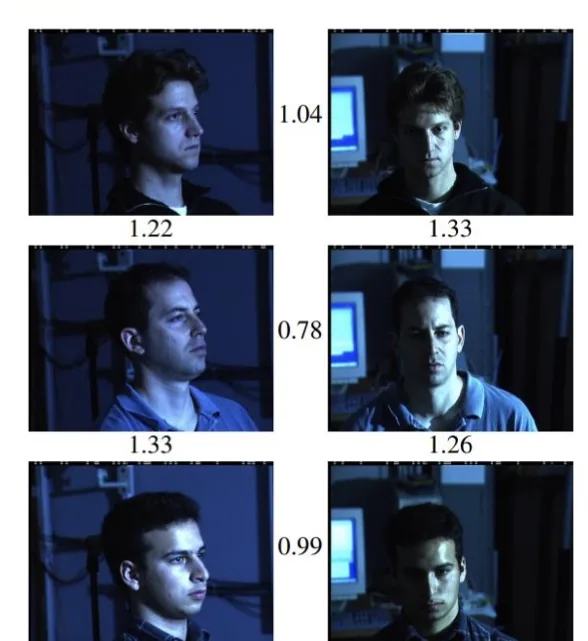
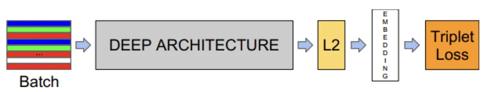
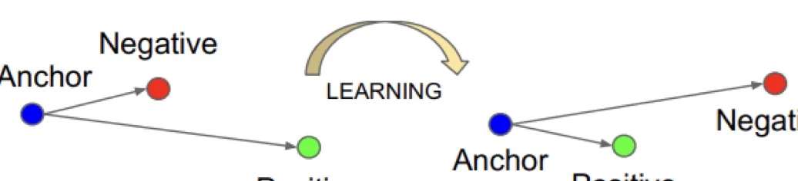
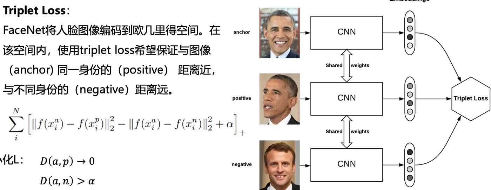

计算机视觉 · 第 8 章 人脸识别
8.8 经典网络：FaceNet 与 Triplet Loss
DeepID 的路线是「分类网络 + 验证损失」，FaceNet 干脆把分类器拿掉：不再问「这是几号人」，而是直接问「这两张脸在空间里离得有多远」。这一节看它如何把人脸映射到欧几里得空间、用 128 维向量表示身份，以及三元组损失（triplet loss）是怎么把「同人近、异人远」写成一条可以优化的式子的。
1. 把人脸映射到欧几里得空间
FaceNet 基于深度卷积神经网络，将人脸图像映射到欧几里得空间，空间距离的长度代表了人脸图像的相似性：同一个人的不同图像在空间距离很小，不同人的图像在空间中有较大距离。
课件接着给了一句很有分量的话：只要该映射空间生成，人脸识别、验证和聚类等任务就可以轻松完成。

这句话把 FaceNet 的野心讲清楚了：它输出的不是一个分类结果，而是一个度量空间。有了这个空间，识别（在新库里找最近的）、验证（比一个阈值）、聚类（把近的归成一堆）都退化成同一个动作——算距离。这与 DeepID2 的验证损失是同一个思想方向，只是 FaceNet 把它做成了唯一的训练目标。
效果上，FaceNet 在 LFW 数据集上准确率为 99.63%。课件的评价是：FaceNet 模型的优点是只需要对图片进行很少量的处理——只需要裁剪脸部区域，而不需要如 3D 对齐之类的额外预处理即可作为模型输入；同时，该模型在数据集上准确率比较高。
这条「不需要 3D 对齐」的优点是相对于传统方法说的：早期方法为了消除姿态影响，往往要先做三维对齐这类重预处理；FaceNet 表明，只要训练得足够充分，网络自己就能在特征空间里吸收掉这些变化。这也回应了本章第 1 节的那条主线——把「对付变化」的工作从人工流水线交给数据驱动的模型。
2. 128 维向量与三元组损失
FaceNet 的结构选择很直接：网络直接输出为 128 维度的向量空间；训练时不加分类损失，直接使用基于 triplets 的最大边界近邻分类的 loss 函数训练神经网络。

「最大边界」这个词来自它的损失形式：它不是要求异类距离无限大，而是要求「异类比同类至少远出一个边界 α」，达到这个边界就不再惩罚。这与 DeepID2 验证损失里的阈值 m 是同一个思路。
3. Triplet Loss：锚点、正样本、负样本
三元组指的是三张图：anchor（锚点，当前这张脸）、positive（与锚点同一身份的另一张脸）、negative（与锚点不同身份的一张脸）。FaceNet 将人脸图像编码到欧几里得空间，在该空间内，使用 triplet loss 希望保证与图像（anchor）同一身份的（positive）距离近、与不同身份的（negative）距离远。

写成式子，就是让「锚点到正样本的距离」比「锚点到负样本的距离」至少小一个边界 α：
L = ‖f(a) − f(p)‖² − ‖f(a) − f(n)‖² + α
课件的记法是把它写成最小化形式：最小化 L：D(a, p) → 0，D(a, n) > α——也就是锚点到正样本的距离趋近于 0，同时锚点到负样本的距离大于边界 α。

图上还有一个容易忽略的细节：三条支路标注的是 Shared weights（共享权重）。三个 CNN 其实是同一个网络的三次调用，因此三张图被映射进的是同一个空间——不然距离就没有可比性了。这一点在设计度量学习类网络时是必须遵守的前提。
最后说清 α 的作用。如果只要求 D(a, p) 小、D(a, n) 大，网络可以把所有特征都压到一个点上再靠噪声分开；有了 α，模型必须为「不同身份」留出至少 α 的间隔，空间才有真正的判别力。而 α 取多大是个权衡：太小区分度不够，太大则大多数三元组都落在惩罚区内、训练难以收敛。
本节小结
- FaceNet（CVPR 2015）基于深度卷积网络，把人脸图像映射到欧几里得空间，空间距离即相似性：同一人的图像距离小，不同人距离大。映射空间一旦学成，识别、验证、聚类都可以用距离比较完成。
- 网络直接输出 128 维向量，用基于三元组的最大边界近邻分类损失（triplet loss）训练；在 LFW 上准确率 99.63%。优点是只需要裁剪脸部区域，不需要 3D 对齐之类的额外预处理。
- 三元组由 anchor、positive（同身份）、negative（异身份）组成，目标是同身份靠近、异身份远离；损失写成
L = ‖f(a) − f(p)‖² − ‖f(a) − f(n)‖² + α，即最小化 L 时D(a, p) → 0、D(a, n) > α。 - 三条支路共享权重，保证三张图被编码进同一个空间；边界 α 决定了「不同身份至少要隔开多远」，是区分度与收敛难度的权衡。